Afterlife of A Fish
Lake, Market, and Kitchen of Coimbatore
Every ordinary object holds an extraordinary story behind it. This series explores one such overlooked story in the urban landscape of Coimbatore. When we think of a fish, we usually imagine it in water. Yet for many fish, another journey begins the moment they leave it.
Humans have countless ideas about the afterlife, shaped by religion, culture, and belief. Fish are granted no such rituals, yet they too undergo a transformation after death. They become commodities, are traded through markets, prepared in kitchens, served as food, and eventually reduced to remains.
"This series follows a fish through that entire afterlife journey—from fisherman to market, from kitchen to dining table. With each stage, it gradually loses its identity, until only traces remain. What survives of that journey is this photographic series."
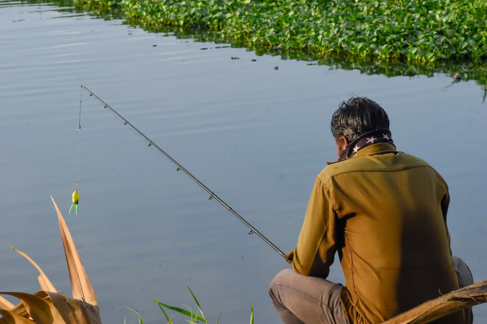
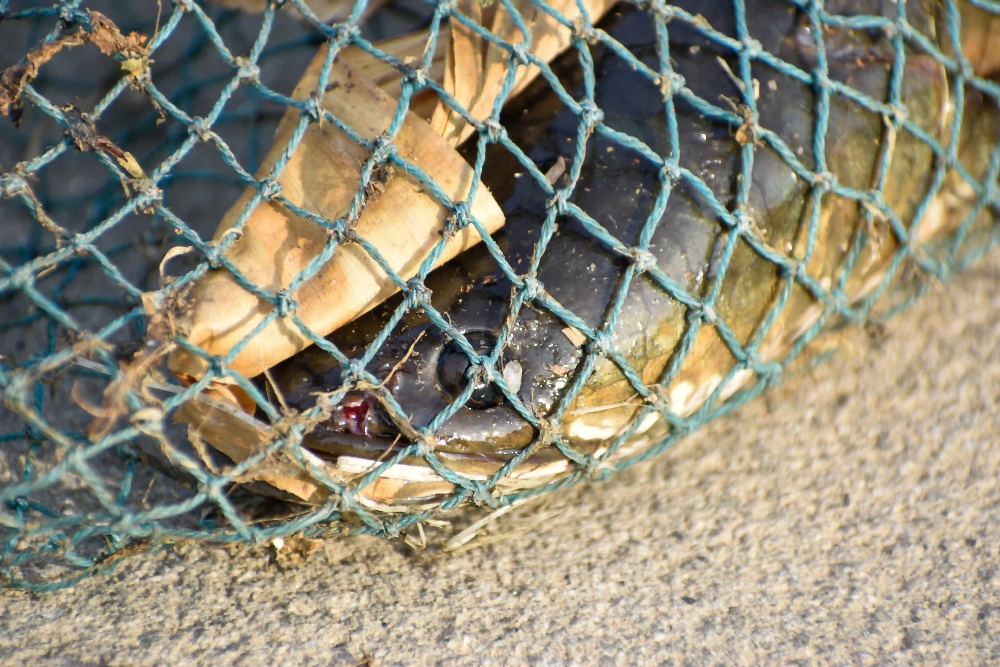
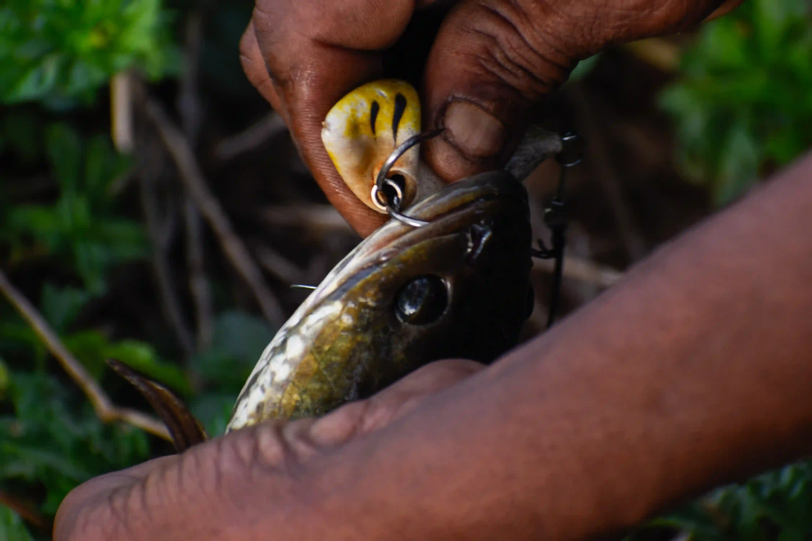
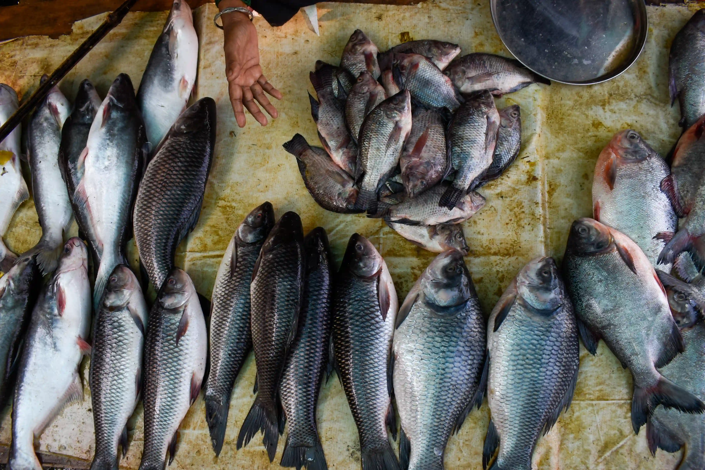
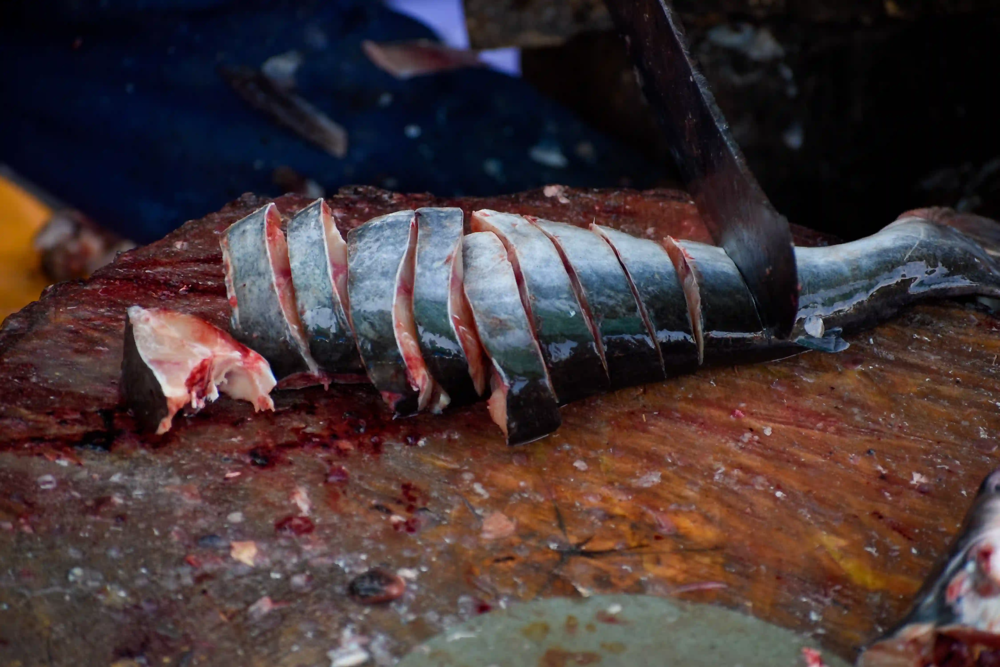
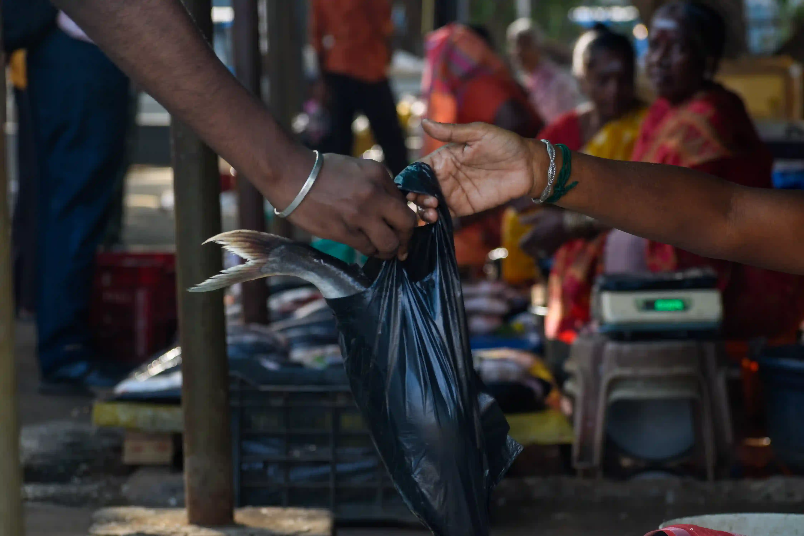
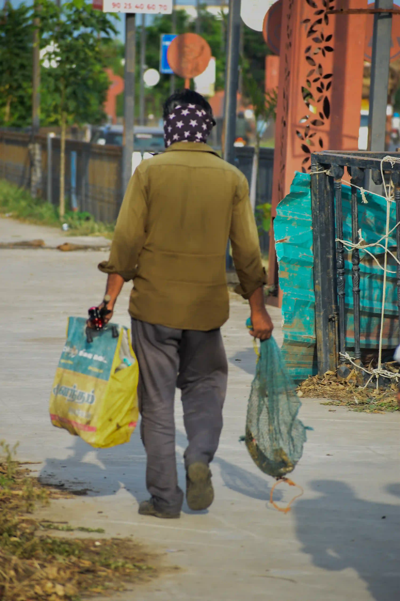
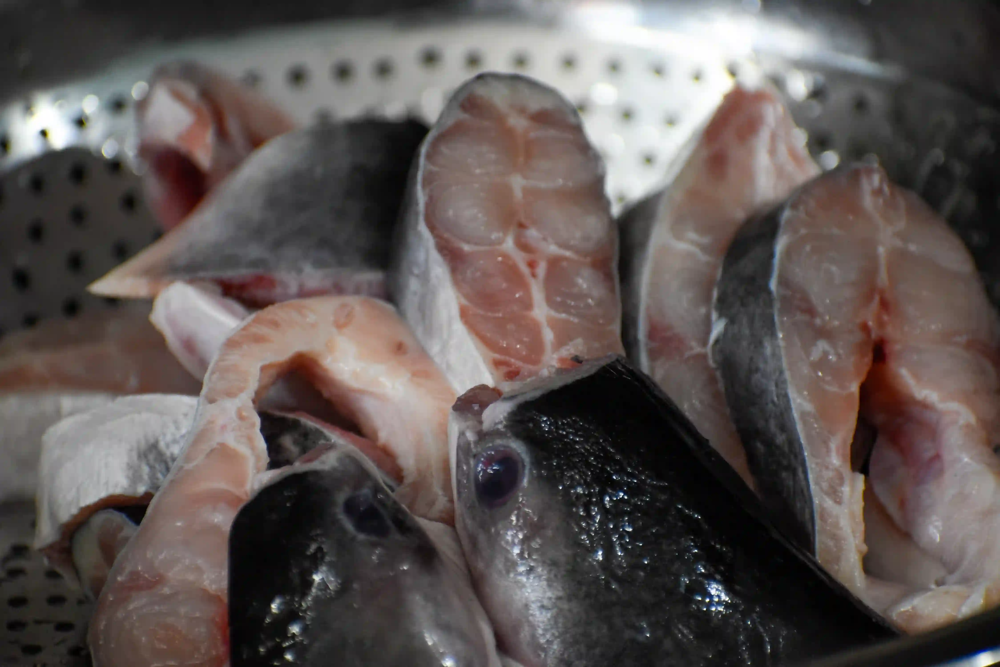
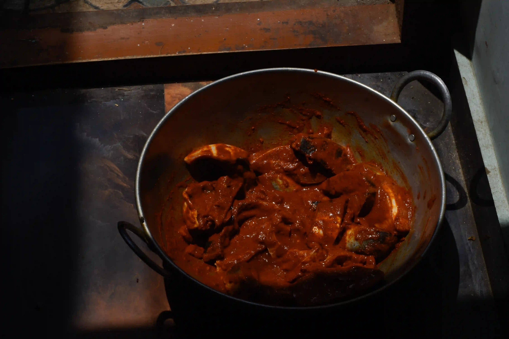
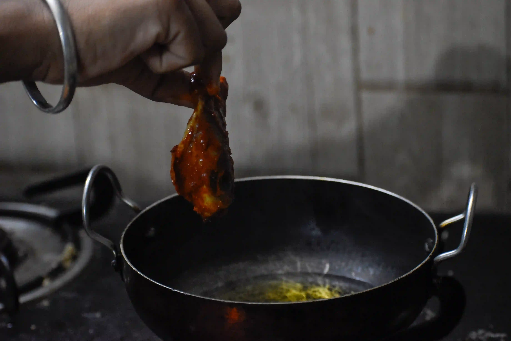
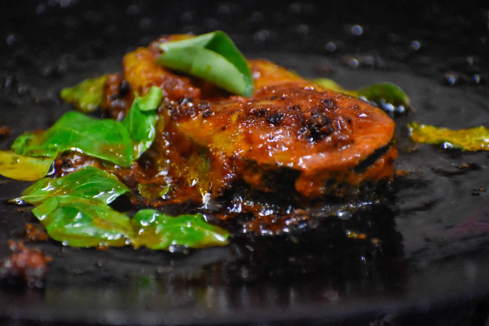
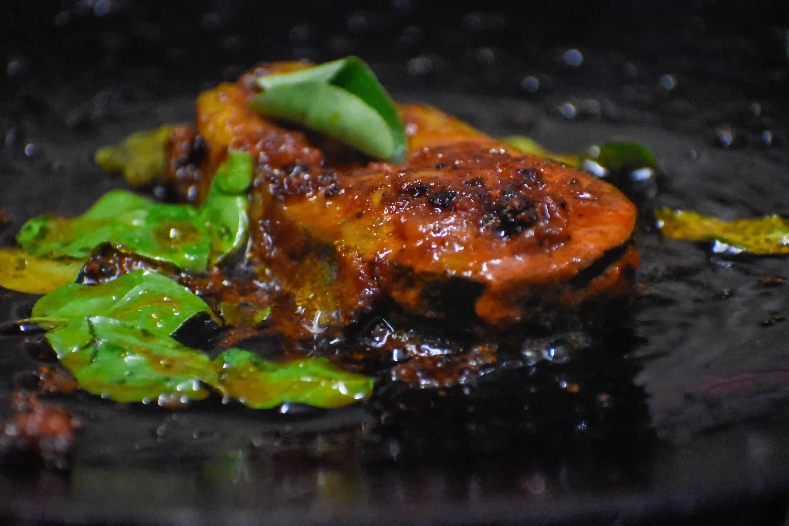
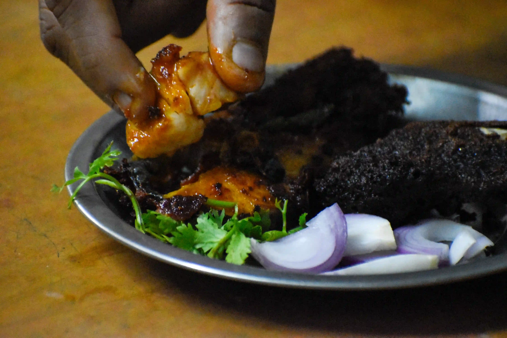
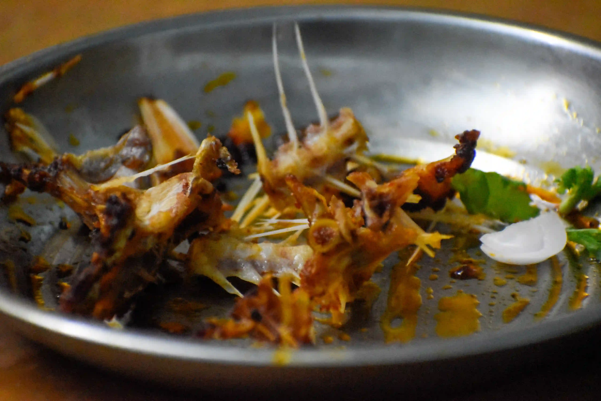